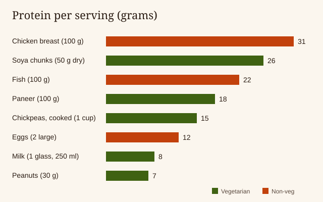

Why do students need protein?
A typical hostel day looks like this: tea and bread in the morning, rice and a thin dal at lunch, some chips while studying, and maggi at midnight. This food fills the stomach, but it is mostly carbohydrates and very low in protein.
Protein helps your body build and repair muscles, skin and hair. It also keeps you full for longer, so you feel less hungry between classes and snack less on junk food.
If you play sports, go to the gym, or walk a lot around campus, your body needs regular protein to recover.
How much protein does a student need?
A simple rule for most healthy adults is 0.8 grams of protein for every 1 kg of body weight each day. So a student who weighs 60 kg needs about 48 grams a day.
Students who play sports or go to the gym need more, usually between 1.0 and 1.6 grams per kg. The calculator below uses your weight and how active you are. A doctor or dietitian can tell you the exact amount for you.
Cheap high protein foods for hostel students
You do not need a kitchen for most of these. Many are already in your mess, or can be bought at the canteen or a small shop near campus. The protein amounts are approximate for one normal serving.
Vegetarian options
| Food | Serving | Where to get it | Protein (g) |
|---|---|---|---|
| Soya chunks | 50 g (dry) | Kirana shop; soak in hot water from a kettle | 26 |
| Paneer | 100 g | Mess sabzi or dairy shop | 18 |
| Chole / rajma | 1 cup cooked | Mess or canteen | 15 |
| Milk | 1 glass (250 ml) | Mess breakfast or milk packet | 8 |
| Peanuts | 30 g (a handful) | Keep a jar in your room | 7 |
| Curd (dahi) | 1 cup | Mess lunch | 7 |
| Mess dal | 1 bowl | Mess lunch and dinner | 7 |
| Roasted chana | 30 g | Any shop; no cooking needed | 6 |
Non-vegetarian options
| Food | Serving | Where to get it | Protein (g) |
|---|---|---|---|
| Chicken, cooked | 100 g | Mess non-veg day or canteen | 25–31 |
| Fish, cooked | 100 g | Mess or local eatery | 22 |
| Boiled eggs | 2 large | Egg cart near campus or a kettle | 12 |

A sample protein day for a hostel student
This is a realistic day for a vegetarian student who eats in the mess. It needs no cooking, except a kettle for soya chunks if you want extra.
| Time | What to eat | Protein (g) |
|---|---|---|
| Breakfast (8 am) | Poha or upma + 1 glass of milk | 11 |
| Before class | A handful of peanuts | 7 |
| Lunch (1 pm) | 2 roti + rice + 1 bowl dal + 1 cup curd | 20 |
| Evening snack | Roasted chana instead of chips | 6 |
| Dinner (8 pm) | Rice + 1 cup rajma or chole | 18 |
| Total for the day | ≈ 62 | |
Non-veg student? Add 2 boiled eggs at breakfast and you get about 12 grams more.
Snacks for exam time and late-night study
- Roasted chana or peanuts instead of chips and biscuits
- A glass of warm milk instead of the third cup of tea
- Boiled eggs from the egg cart instead of maggi
- Sprouts chaat from the canteen
Common protein myths students believe
- Myth: “You need protein powder to build muscle.”
- Fact: Most students can reach their goal with eggs, soya, paneer, milk and dal. Powder is only a shortcut, not a must.
- Myth: “Vegetarians cannot get enough protein.”
- Fact: The day plan above is fully vegetarian and gives about 60 grams.
- Myth: “Eating protein is only for gym people.”
- Fact: Everyone needs protein every day, including students who only sit and study.
- Myth: “More protein is always better.”
- Fact: Your body uses what it needs. Eating far more than you need does not give extra benefit.
Frequently asked questions
How much protein does a college student need?
Most healthy students need about 0.8 grams for every kilogram of body weight each day. A 60 kg student needs about 48 grams.
Can a vegetarian hostel student get enough protein?
Yes. Eat the dal, curd and chana from the mess, and add milk, peanuts, roasted chana or soya chunks. This easily gives 50 to 60 grams a day.
Do students who go to the gym need protein powder?
Not always. Most students can reach their protein goal with food like eggs, paneer, soya and milk. Ask a doctor or dietitian before using powder.
What is the cheapest protein food for students?
Soya chunks, peanuts, roasted chana and eggs give a lot of protein for a small amount of money.